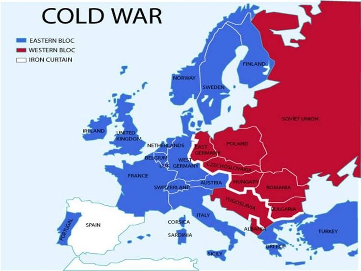
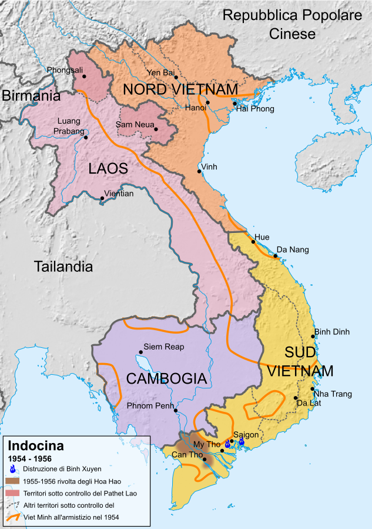
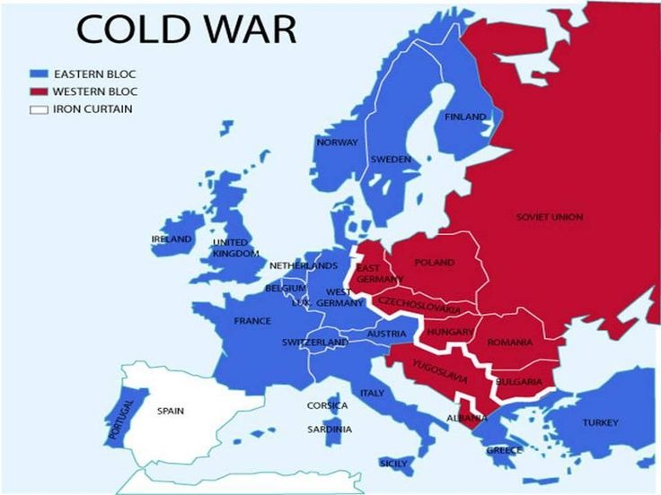
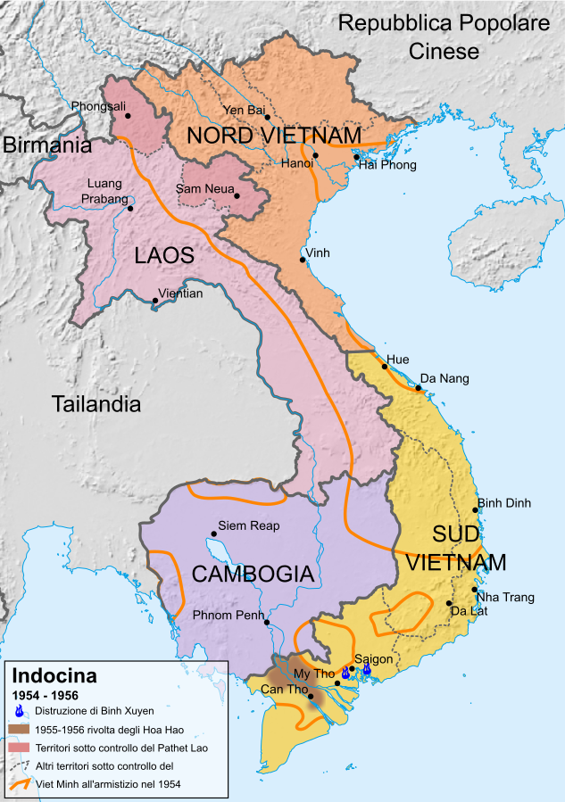
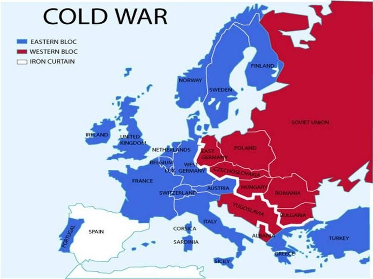
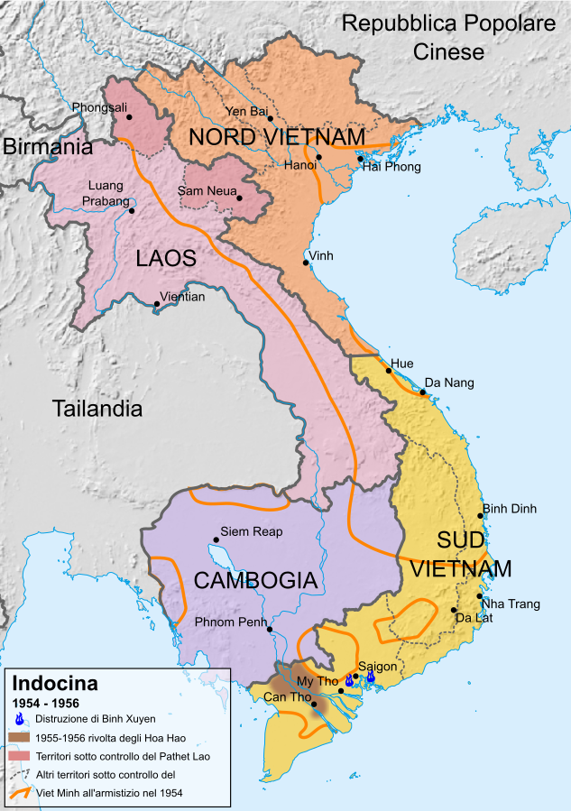
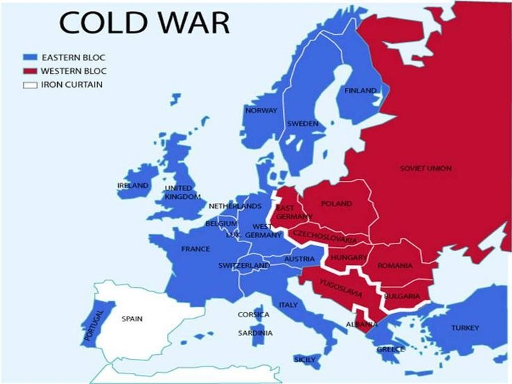
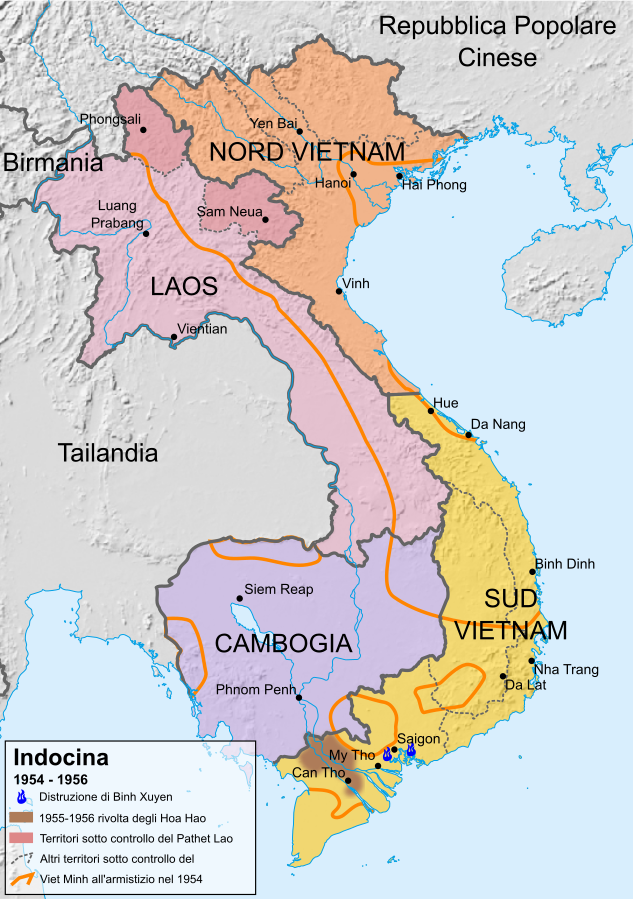

In this period there was a lot of tension between the USA and the Eastern countries.
In both blocs fanaticism and fear of eachother dominated the countries: on one hand, the fear of communism, on the other hand, the fear of capitalism.
The american senator McCarthy promoted a "witch hunt" against the communists in the US and in the allied states (such as France and Italy).In the Eastern bloc there was the spread of communist totalitarian systems. All protests were labelled at the service of America and, because of this, they needed to be repressed.
We remember the riots in Budapest in 1956 and the Prague Spring of 1968. Between 1945 and 1975, there was a dissolution of the colonial empires of Britain, France, Belgium and Holland.In Indochina there was the liberation movement, led by the Communist leader Ho Chi Minh that opposed the return of France after WW2 between 1945 and 1954.
The conflict ended in 1954 with the Geneva Accords and the French territories in that area became the states of Laos, Cambodia and Vietnam.
The Vietnam was divided in two parts: the north was controlled by a communist regime and the south ruled by a dictatorship supported by the USA.